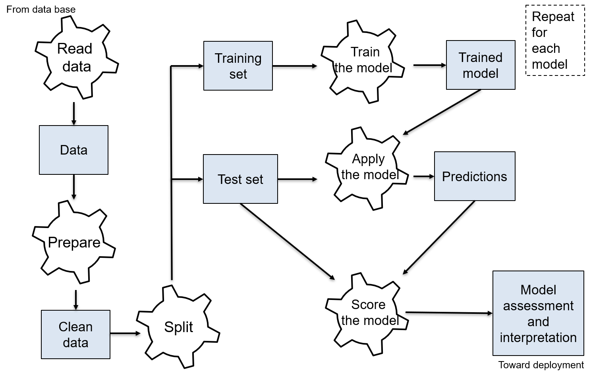

Introduction to Machine Learning (ML)
Machine Learning
What is Machine Learning?
Machine learning is a set of techniques using models that are trained on data to achieve forecasting or pattern discovery.
Unlike programming, consisting of implementing a solution already defined by the developers, ML let the model learn by seeing data (learning from examples).
ML is a sub-field of Artificial Intelligence (AI).
Deep Learning is a popular sub-field of of ML that uses deep neural networks, a particular type models.
Informal expectations from ML
Provide predictions and/or decisions (predictive analytics).
Fairly automatic and data based (not judgmental).
The prediction quality can be assessed (metrics).
The model improves with the increase/improvement of the data base.
The model can be interpretable.
Machine Learning versus Statistics
ML is not a re-branding of statistics. Both use data and statistical models. Applications of ML are oriented toward predictions, applications of statistics are oriented toward inference (research, hypothesis assessment). E.g.,
A study aims to in/validate that employees with a psychological support are less prone to burnout. This study needs observations, data analysis, and statistical tests of hypotheses. This is typical of academic work and is usually qualified as statistics (inference).
A study aims to develop a prediction tool for the credit risk associated to a client in a bank. This study needs observations, data analysis, and model validation. It is typical of ML.
Data
Data types
Various types of data can be used in ML (non-exhaustive):
Tabular data: values organized in columns. The most common.
Time series: values observed in a specific order.
Textual data: words, set of words, texts, etc.
Image data: e.g., \(512\times 512\) pixels consisting of \(3 \times\) values between 0 and 255, for a RGB color image.
Video: set of ordered images often going with sounds (coded with times series).
Networks and relational data: links and distances between units (interactions in a social networks, roads on a map, etc.).
In this course, we see ML for tabular data.
Values organized in columns. Values can be:
Categorical: can take a finite number of predefined levels.
Nominal: levels are unstructured. E.g., hair colors, genders, food preferences, etc.
Ordinal: levels have a predefined order. E.g., \(S<M<L\), Disagree \(<\) Agree \(<\) Tot.Agree.
Numerical:
Continuous: numbers with decimal. E.g., revenues, age, height, etc.
Discrete: integers. E.g., counting people waiting in line, number of cars per household, etc.
Data types for tabular data
Some data can be represented in different types or transformed. E.g.,
Categorizing the revenue into an ordinal variable (intervals: \(]0,10]\), \(]10,20]\), etc.).
Assign numbers to ordinal levels. E.g., Sizes \(XS=1, \ldots, XL=5\).
Create dummy variables (see later).
Tabular data structure
The table is organized as
Each row is an instance: the unit of observation.
Each column is a feature: the variables along which the unit is measured.
Synonyms:
Instances, cases, observational units...
Features, variables, attributes, predictors...
Learning tasks
In ML, two main tasks are addressed
Supervised Learning The aim is to predict an outcome of interest \(y\) using features \(x\). It includes regression and classification tasks, scoring, model selection, etc.
Unsupervised Learning The aim is to learn the dependence patterns of several features and to find meaningful representations of these patterns. This includes clustering and dimension reduction.
Supervised and unsupervised learning
Examples:
Supervised Learning A retailer wants to forecast the spending of a category of customers in reaction to a marketing campaign.
Unsupervised Learning A retailer wants to group customers in different profiles according to what they buy and their personal characteristics. The profiles are not known in advance.
Supervised learning tasks and the outcome
For supervised learning, one (or several) feature has a specific interest because it is to be predicted using the other features. It is called the outcome (syn. the response).
Two types of sub-tasks are distinguished depending on the outcome:
Classification: the outcome is categorical.
A binary outcome: binary classification
More than two levels: multi-class classification
Regression: the outcome is numerical.
Note: regression task and regression (e.g., linear model) are not the same thing. Regressions can used for the regression task but (a lot of) other models exist.
Models
Models
Supervised learning has two pillars: the data and the models. A model is a trainable algorithm which takes features \(x\) and returns an output \(\hat{y}\), a prediction of the outcome \(y\) corresponding to \(x\).
Synonyms: learners, algorithms. For classification, classifiers.
Notations: \(f(\cdot)\) is the model and \(\hat{y} = f(x)\) is the prediction at \(x\).
Model training
The model is trainable. It can be trained to the available data to produce good predictions. The model, which is itself an algorithm, comes with an training algorithm that can adapt the parameters of the model to optimize a quality criterion. The training algorithm is specific to the model and the criterion. For a given model, you may have several choices (several criteria, several training algorithms, etc.).
Model training: example
We want to predict \(y\) from features \(x\) with a linear regression. This model has parameters \(\beta\). Training the model to the data means selecting \(\beta\) from the \((y_i,x_i)\), \(i=1,\ldots,n\). Below are two possible choice for the criterion:
The mean square of the errors (MSE). The optimal parameter \(\hat{\beta}\) is called the Ordinary Least Square (OLS) \[\hat{\beta} = \arg\min_\beta \frac{1}{n}\sum_{i=1}^n (y_i - x_i^T \beta)^2.\]
The L1-penalized MSE. The optimal parameter \(\hat{\beta}\) is the LASSO (least absolute shrinkage and selection operator) \[\hat{\beta} = \arg\min_\beta \frac{1}{n}\sum_{i=1}^n (y_i - x_i^T \beta)^2 + \lambda \Vert \beta\Vert_1\]
Model training: optimization
In general, each criterion leads to a different set of parameters and a different model. No one is uniformly better than the others. E.g., the OLS has a smaller MSE on the training data (better fit) but the LASSO is more robust against overfitting. It however comes at the cost of selecting \(\lambda\). Depending on the model, it can have several options for its training. It requires the minimization (resp. maximization) of a loss (resp. goodness-of-fit) function. It is always data based. How the optimization is done is part of the so-called black box aspect of machine learning models: people don’t know what is going on with the mathematics put in action when pushing the training button. Fortunately, in this course, we will study some of these optimizations for some models.
Metrics
Metrics
After training, we have the best version of a model for the data, according to the chosen criterion. Is it the best model? Is it just doing a good job? To answer, we use metrics: the quality of the model predictions:
Classification: accuracy, specificity, sensitivity, balanced accuracy, \(F1\), entropy, etc.
Regression: \(R^2\), RMSE, etc.
Interpreting/comparing these metrics allows to evaluate the model performance.A fundamental aspect of metrics is that they are only based on the predictions and the data. Thus, different models can be compared.
Model selection
A classical approach in ML consists of putting several models in competition. These cross-model comparisons are achieved comparing their metrics: the best model achieved the best metric. E.g., you want to build a predictor for real estate prices from observable features (\(m^2\), location, type, etc.). You train one linear regression with OLS, one linear regression with LASSO, one regression tree, one neural network, etc. You select the model with the lowest MSE on unseen data set aside before the training. This is possible only because (again) the metrics are only based on the predictions and the data.
Base model
It is a good practice to have a base model to get a reference whether a final is worthy or not. E.g., for the prediction of the real estate price, the base model could be the linear regression with OLS since this model is common. Suppose at the end of the selection, you select the neural network. The improvement over the OLS on the MSE is \(1\%\). Is it worth using a complex neural network, heavy to manipulate, not transparent, and energy consuming for such a small improvement ?
Overfitting
Overfitting is one of the worst enemy in ML:
A model is trained on the observed data.
The predictions are used for future data.
Overfitting arises when the model is well trained on the observed data, but has a low capacity of generalization outside this data base.
Overfitting
E.g., for the real estate example, consider the silly model:
If the apartment is already in the observed data base, the predicted price is the one in the data base.
If it is a new apartment, the predicted price is random.
The MSE on the data base will be close to zero since the model predicts all observed data exactly. However, this model is useless to the company that cannot use it for new apartments.
Detect overfitting
To detect overfitting, data splitting strategies are applied:
- Splitting the data base into a training set1 and a test set. In the previous example, the silly model would achieve a perfect accuracy on the training set but a poor accuracy on the test set (because it never saw these data before): that difference reveals the overfitting.
More complex strategies exist like
Cross-validations
Bootstrap
Avoid overfitting
Data splitting is useful to select one model among several to avoid overfitting. However, if all the models are prompt to overfit, data splitting will not help. Overfitting often results from too much complexity in the model. Complexity arises when the model has a lot of parameters. Avoiding overfitting can be obtained by constraining the model to less parameters, i.e., less complexity. When a model is trained, goodness-of-fit and complexity are taken into account. A complex model is prompt to overfit while a too simple model will be prompt to under-fit. The trained model should satisfy a compromise between these two. E.g., LASSO is a constrained OLS that penalizes the complexity by shrinking toward \(0\) some of the components of \(\beta\).
Interpretation
Interpretation
ML models can be black boxes, i.e., difficult to interpret. Interpretation in ML consists in
Discover if a feature (variable) is important for the prediction of the outcome. E.g., what influences the price of an apartment2 according to the model ?
Discover how the feature is related to the outcome. E.g., Does the price increase when you move away from the city center?
Several techniques exist (see later). Interpretation is often an aim in itself for ML (more important than the prediction task itself).
Supervised learning steps
With training/test set splitting

Skills and tools
Skills
Useful skills for ML (non-exhaustive):
Knowledge: ML is an active and moving field. Stay informed!
Programing: success factor for a ML project as developer and/or manager.
Communication: not specific to ML project but the technicality of the topic makes it more complex.
Tools
Several tools (computer programs, apps, webpages, etc.) allow to build ML solutions. In this course, we use R and Python:
Most used programs.
Rfor data exploration, low and medium-level ML, and (classical) statistics;Pythonfor all-level ML.Open, free, and well documented (help, forums, etc.).
Serious, widespread, and under continuous development with an active community.